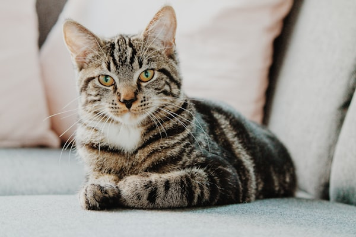

Welcome to our adoption center, where loving pets find forever homes.
We believe every pet deserves a safe, caring home. Our team helps match animals with families who can provide comfort, food, and affection.
Adopting a pet saves a life and gives you a companion for years to come. Visit our contact page to learn more.


This page documents our adoption service and highlights available pets for potential families.
| Step | What Happens |
|---|---|
| 1 | Application review |
| 2 | Meet and greet with the pet |
| 3 | Adoption paperwork and home visit |